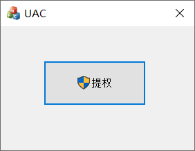
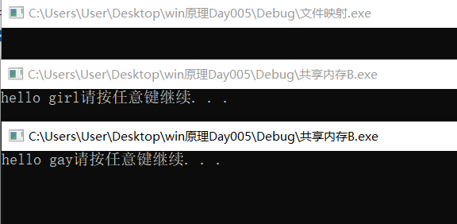
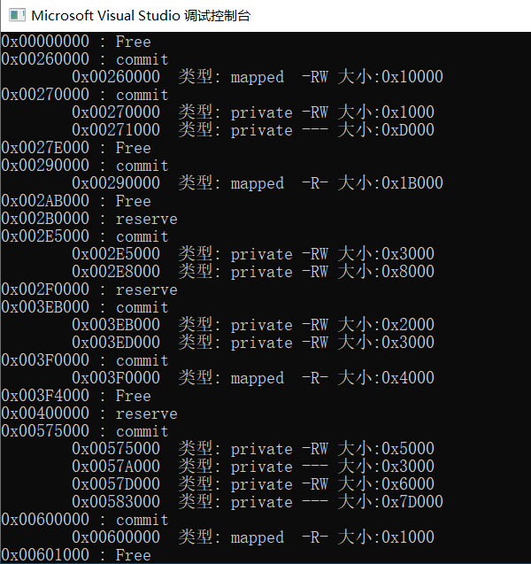

windows的权限管理
UAC提升按钮
在windows vista之后windows操作系统引入了UAC机制。即User Account Control，用户账户控制。
它使得即使以管理员登录的账户在创建进程的时候也是分配一个低权限的令牌。这个令牌又叫做Filter Token，即过滤令牌。
只有当程序以管理员身份运行，才会给予其高权限，但是以管理员身份运行的程序全部都会弹出一个选择对话框。
1 | // 1. 获得本进程的令牌 |

以管理员权限打开进程
1 | // 1. 隐藏当前窗口 |
提升当前进程权限为调试权限
1 | BOOL EnableDebugPrivilege(BOOL fEnable){ //提升为调试权限 |
遍历权限
1 | void ShowPrivilege() |
windows的内存管理
windows引出了虚拟内存的概念
- 无论物理内存实际有多大，每一个进程都有4GB的虚拟内存空间。
- 每一个进程再虚拟内存空间的使用上都是相似的，低2GB是用户空间，高2GB是系统空间，低2GB的用户代码空间的代码无法访问高2GB系统空间。
- 在进程中使用的全部都是虚拟内存，具体虚拟地址到物理地址的装换由操作系统内核完成，故而你无法再自己的进程中访问到其他进程的内存，虽然大家的地址长得如此类似。
- 一个进程的虚拟空间只有使用一部分与物理内存有映射关系，并且windows尽量保证对于不同的进程的同一份数据，在物理内存中只有一份，分别映射到多个进程中。从而节约内存。
堆内存的管理
堆在windows中也是作为一个对象来管理的，我们可以创建一个堆，之后再堆上分配内存，销毁内存等等，c/c++中的new和malloc最终也是使用windows中的堆对象来分配空间的。
当windows系统创建一个进程后，会为此进程创建一个默认堆，这个默认堆是不能够销毁的。所以有这么一个应用场景，可能会在某一个时间段内，或者某一个任务内需要大量的内存，并且可能是一个个很小很小的分片。如果全部使用默认的堆，那么全用完之后，需要释放就显得相当麻烦，必须一个个的释放，而如果这个作业中途异常，可能导致一些内存分片的句柄丢失，则释放就更加麻烦，又不能枚举出来一个个释放，如此就很容易造成内存丢失，但是再这种情况下，就可以通过HeapCreate创建一个独立的内存堆，当应用完之后，直接HeapDestory将该内存堆所有的内存释放掉。
| API | 说明 |
|---|---|
| HeapCreate | 在进程中创建一个堆，返回一个堆句柄 |
| GetProcessHeap | 获取当前进程中的一个堆，返回一个句柄 |
| GetProcessHeaps | 获得进程中所有堆，包括堆的数量和各个堆的句柄 |
| HeapAlloc | 从指定的堆上分配块 |
| HeapReAlloc | 重新分配内存，改变已经分配好的堆内存块大小 |
| GetSystemInfo | 获取系统信息 |
| HeapSize | 获取制定堆的大小 |
| HeapFree | 释放HeapAlloc和HeapReAlloc申请的内存 |
| HeapDestory | 销毁由HeapCreate创建的堆 |
| CreateToolhelp32Snapshot | 可以分别创建进程，线程，进程模块，进程堆的快照 |
| Heap32First | 用来首次调用，获得第一个堆对象的信息 |
| Heap32Next | 以后的调用由它来完成，不断获取堆对象信息 |
创建一个堆
1 | //创建一个可增长的堆 |
在已经存在的堆上申请空间
1 | HANDLE hHeap = GetProcessHeap(); // 获取默认堆 |
虚拟内存管理
需要知道，虚拟内存是按照分页来管理，目前一个内存页是4KB，故而管理内存的时候，总是以4KB为单位进程管理的。管理虚拟内存需要用到下面的函数：
| 作用 | 函数名 | 说明 |
|---|---|---|
| 分配 | VirtualAlloc | 分配或者预定一块虚拟内存 |
| VirtualAllocEx | 可以在其他进程分配或者预定一块虚拟内存 | |
| 释放 | VirtualFree | 将一块虚拟内存释放 |
| VirtualFreeEx | 可以释放其他进程的内存 | |
| 锁定与解锁 | VirtualLock | 可以将内存所动，不能交换到硬盘 |
| VirtualUnlock | 为内存解锁 | |
| 修改保护属性 | VirtualProtect | 修改一块虚拟内存的属性 |
| VirtualProtectEx | 可以修改其他进程的内存属性 | |
| 读写其他进程内存 | ReadProcessMemory | 读取远程进程内存数据 |
| WriteProcessMemory | 将数据写入远程进程内存 | |
| 查询内存状态 | VirtualQuery | 查询内存状态 |
| VirtualQueryEx | 可以查询其他进程内存状态 |
申请与释放虚拟内存
申请一块虚拟内存
1 | //申请虚拟内存(本进程) |
释放内存
1 | VirtualFree( |
整体上来说，虚拟内存有三种状态：空闲的，保留的，提交的
| 状态 | 说明 |
|---|---|
| 空闲的 | 进程不能访问这种页面，此页面还没有被分配 |
| 保留的 | 这个页面已经被分配了。但是还未与物理内存映射，因此这里也是不能访问的 |
| 提交的 | 内存已经被分配了，并且也与物理内存映射了，进程已经可以访问这里 |
当一个进程内核对象被创建成功后，系统内核会给其划拨一部分物理内存，并创建一块虚拟内存，刚创建的虚拟内存只是逻辑上存在的内存，并未与物理内存建立映射关系。此时，这些内存被称为闲置(Free)的或未分配的(unallocated)
如果我们想要使用内存，就必须调用VirtualAlloc()函数来分配其中的某一个内存区域(region)，这种分配行为被称之为预定
当系统分配内存空间时，会确保分配内存的起始地址正好是其内存分配粒度的整数倍，X86架构下，粒度是64KB
可以想象到，对于一个虚拟内存空间，大部分的区域都是空闲的，而提交的内存就像是汪洋无际的大海中的几块陆地。
1 | LPVOID lpvBase = VirtualAlloc( |
虚拟内存的安全属性
每一个页的内存都具有自己的访问属性
| 属性 | 描述 |
|---|---|
| PAGE_EXECUTE | 可执行 |
| PAGE_EXECUTE_READ | 可读可执行 |
| PAGE_EXECUTE_READWRITE | 可写可执行 |
| PAGE_EXECUTE_WRITECOPY | 可执行，写时复制 |
| PAGE_NOACCESS | 不可访问 |
| PAGE_READONLY | 只读 |
| PAGE_READWRITE | 可读可写 |
| PAGE_WRITECOPY | 写时复制 |
虚拟内存的属性可以通过VirtualProtect来修改
1 | LPVOID lpBuf = VirtualAlloc( |
在其他进程中分配虚拟内存，读取和修改虚拟内存
VirtualAllocEx，ReadProcessMemory与WriteProcessMemory三个函数，可以实现跨进程的内存分配，读取，写入等操作，是很多安全技术的基础函数。
1 | DWORD dwPid; |
内存映射(文件映射)
- 文件映射(Mapping)是一种将文件内容映射到进程虚拟内存中的技术
- 映射成功的文件可以用视图(View)来引用这段内存，从而达到操作位于此段内存中文件的目的
- 在使用文件映射时需要先创建映射对象，映射对象分为命名的与未命名的，命名的映射对象可以进程跨进程读写
文件映射的作用及优势：
- 可以让文件操作变得简单易操作
- 文件还是再硬盘中，映射视图是一段内存，因此效率很高
- 可以在不同的进程件共享数据
| API | 说明 |
|---|---|
| GetSystemInfo | 获取系统信息，用于确定分配粒度 |
| CreateFileMapping | 创建一个mapping对象 |
| OpenFileMapping | 打开已命名的mapping对象(可跨进程) |
| UnmapViewOfFile | 取消文件映射 |
| MapViewOfFile | 将mapping对象的文件映射到内存 |
| FlushViewOfFile | 将映射在内存中的文件写回到硬盘中 |
示例代码
1 | //获取文件句柄 |
进程间通讯
进程A：
1 | //创建命名的文件映射对象 |
进程B：
1 | //打开文件映射对象 |

虚拟内存遍历
通过系统提供的API函数VirtualQueryEx()来获取某进程的虚拟内存分布状态，原形如下：
1 | SIZE_T WINAPI VirtualQueryEx( |
此函数执行后会返回一个MEMORY_BASIC_INFORMATION结构体，里面包含有关于此内存地址的详细信息
1 | typedef struct _MEMORY_BASIC_INFORMATION { |
[注1]：页面状态可以是MEM_FREE(闲置)，MEM_RESERVE(预定)，MEM_COMMIT(调拨)，如果页面状态为MEM_FREE，则AllocationBase、AllocationBase、State、Protect的值都将无效，如果页面状态为MEM_RESERVE，则Protect的值无效
[注2]：页面类型可以为MEM_IMAGE、MEM_MAPPED或MEM_PRIVATE
示例代码
1 | // 遍历虚拟内存.cpp : 定义控制台应用程序的入口点。 |
